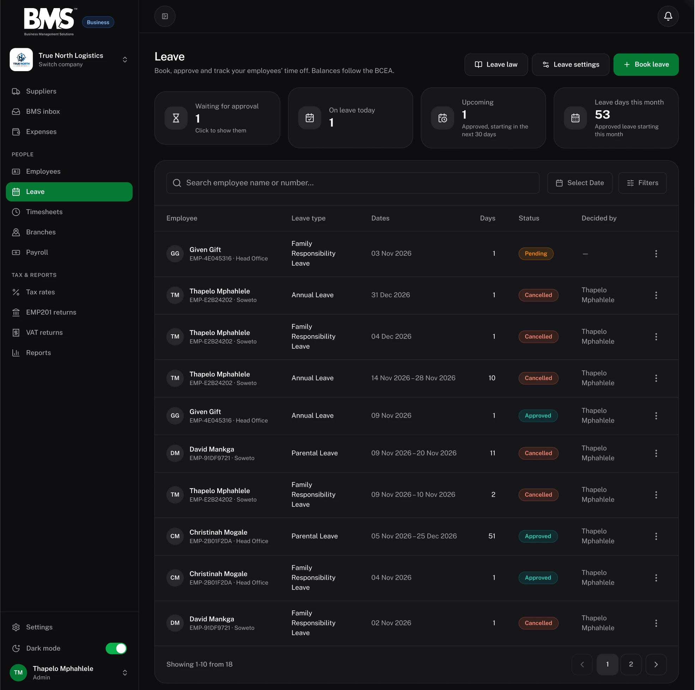
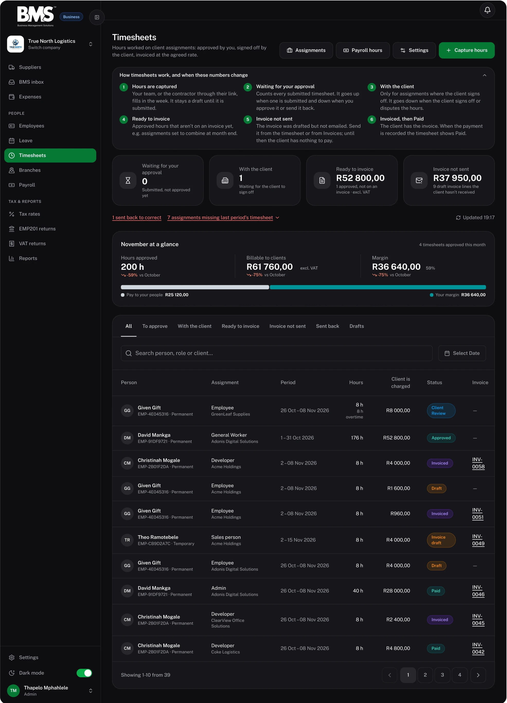
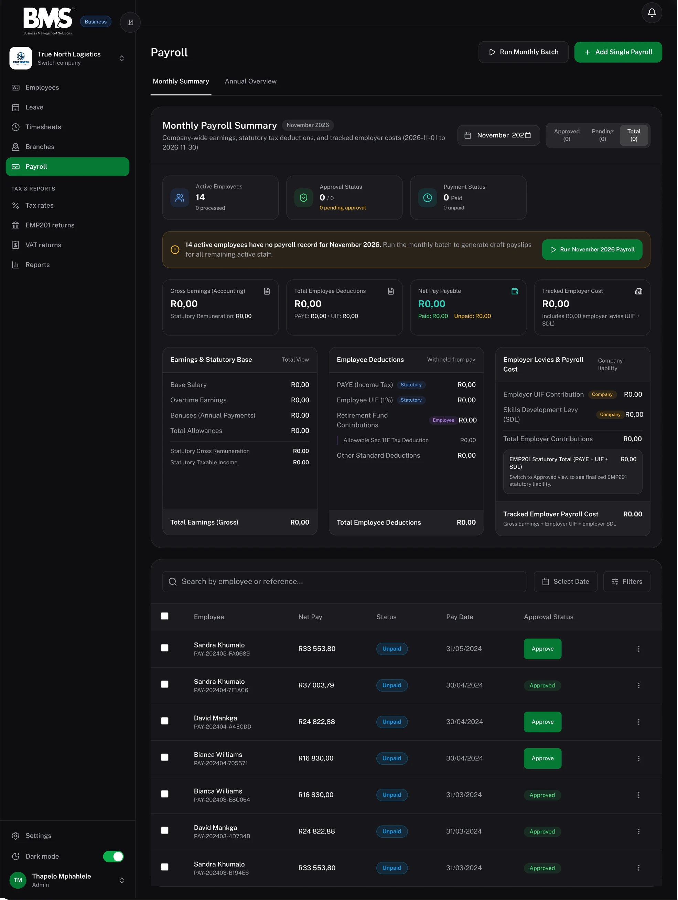

Standard Bank · Thrive
The merchant dashboard, on the web
Overview
The merchant dashboard lived in an Android app, and that app was the only way to open it. I lifted the experience onto the web so the same account works in a browser: the balance, the device application, and the way in.
- Role
- Product designer
- Scope
- Android app to web
- Platform
- Web
The shift
Same dashboard, in the browser
On Android the merchant already had a dashboard for the balance, card sales, and rewards. I moved that screen onto the web first, so a laptop at the till shows the same account the phone does. The app stays Android-only. The web is how everyone else gets in.

The account
Transaction history
Balance opens into the list. Pending transactions sit above the history, with the available amount, the day-end lines, and the card sales.

Devices
The device decision came with it
Applying for a card machine was part of the same app. On the web the merchant picks a package, reads the rental and connection fees, and confirms before the terms. Cashless Pro is that decision on a desktop screen, with the price on the option and the total in the bar.

Payroll

Reports

Impact
Business impact
The account used to live on Android only. On the web, a merchant at the till gets the same account: the balance, the device application, and the way in.
- Android and the browser
- 2 Surfaces
- Balance, devices, sign-in
- 1 Account
- From one device to four
- 4 Packages